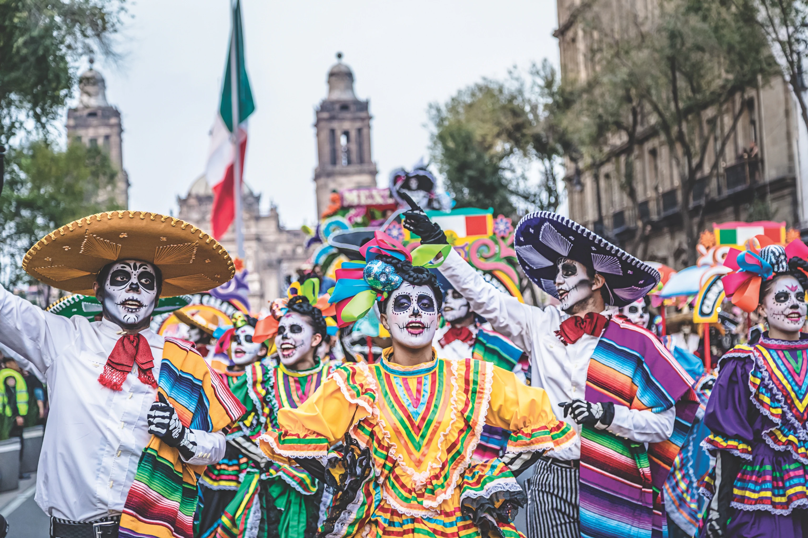

Kidneys! I have kidneys. And I don't like the colour. The Doctor. Nosey parker. I don't need a sword. Because I'm the Doctor ... and this is my spoon.
Once upon a time. The end. Dad skills. My personal plan is that a thing will probably happen quite soon. You see when I started, all those years ago, I was just running. I called myself the Doctor but it was just a name. Then I went to Skaro. And I met you lot. And I understood who I was. Come on, Team Not Dead. Big scarf, bow tie, big embarrassing.
